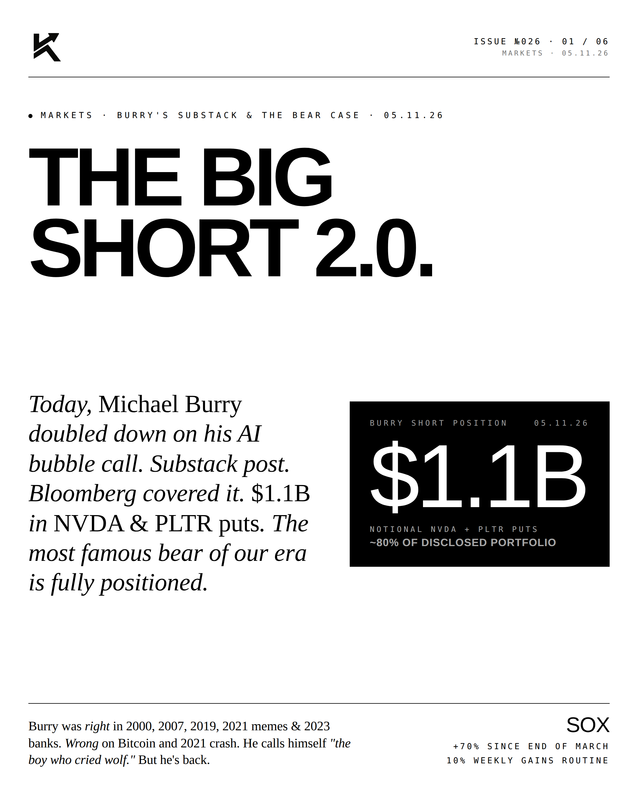
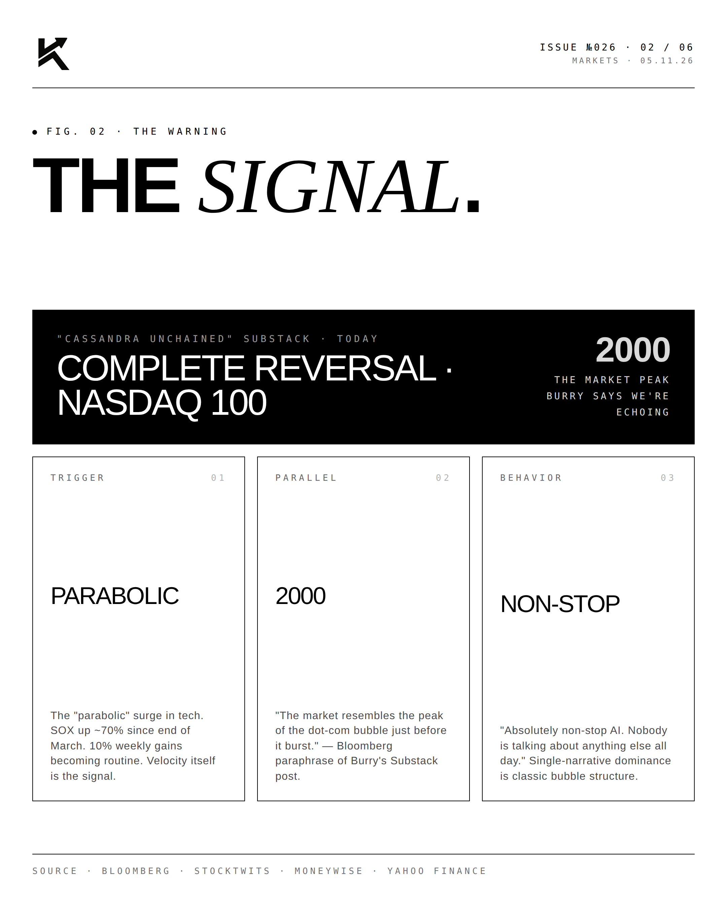
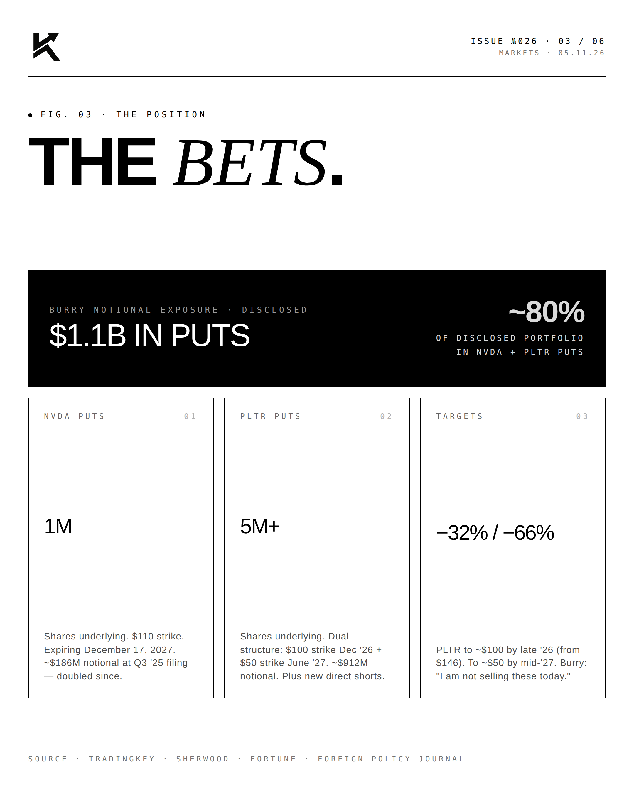
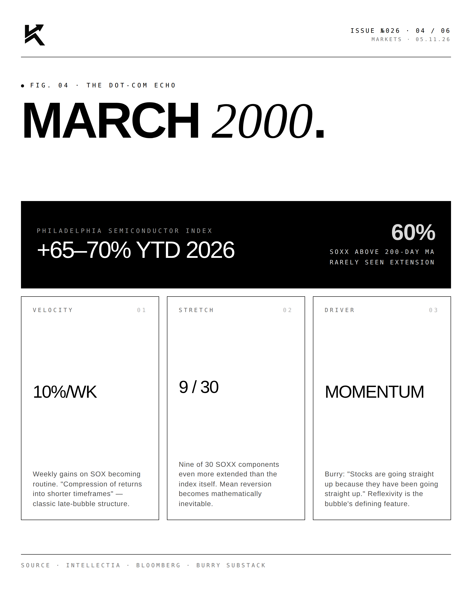
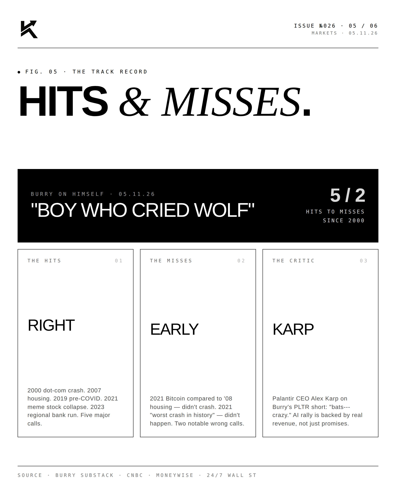
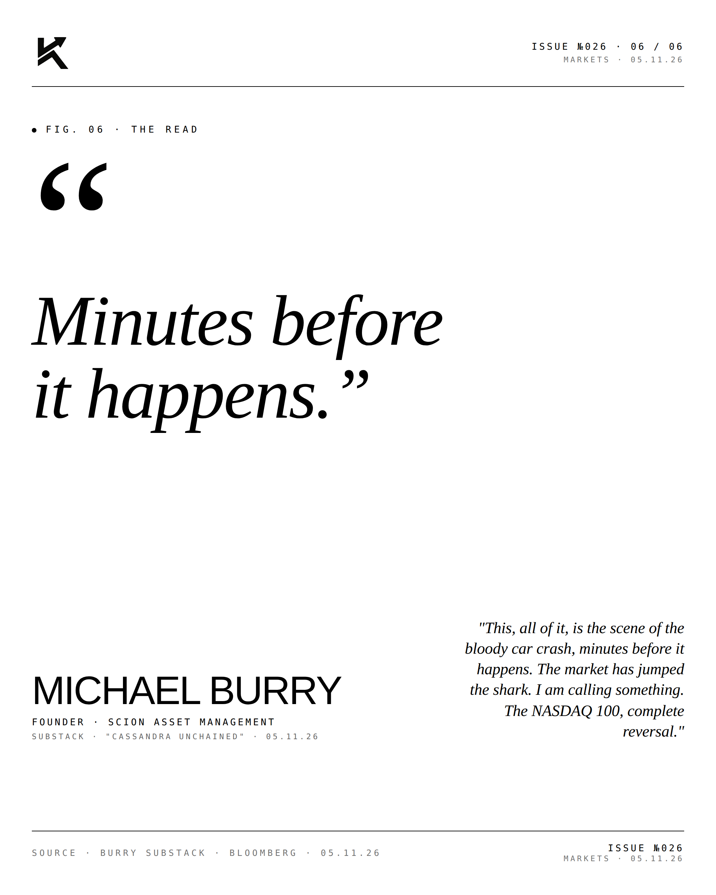

The Big Short 2.0.
Today, Michael Burry doubled down on his AI bubble call. Substack post. Bloomberg covered it. $1.1B in NVDA & PLTR puts. The most famous bear of our era is fully positioned.

The Signal.
On May 11, 2026, Michael Burry published a Substack post titled with characteristic Burry flourish on his blog "Cassandra Unchained." The mythological reference is deliberate — Cassandra was cursed to see truth but never be believed. Burry knows the comparison applies. His own self-assessment: "I am now a meme for the number of times I have called a crash. I have become the boy who cried wolf."

The Bets.
But the position is real. $1.1 billion in notional put options exposure across two names:

- Nvidia (NVDA) — 1,000,000 put options at $110 strike, expiring December 17, 2027. Approximately $186M notional at the Q3 2025 13F filing; the position has doubled since.
- Palantir (PLTR) — 5M+ shares underlying via dual structure: $100 strike December 2026 puts + $50 strike June 2027 puts. Approximately $912M notional, plus newly disclosed direct short positions.
- Approximately 80% of his disclosed portfolio is now in NVDA + PLTR puts.
- Price targets implied: PLTR to ~$100 by late 2026 (32% decline from ~$146). PLTR to ~$50 by mid-2027 (66% decline).

March 2000.
Burry's thesis is that the current AI rally echoes the velocity of the March 2000 dot-com peak. The data he cites in the Substack:

- Philadelphia Semiconductor Index (SOX) up ~65-70% YTD 2026
- 10% weekly gains on SOX becoming routine
- SOXX trading 60% above its 200-day moving average
- Nine of 30 SOXX components even more extended than the index itself

Hits & Misses.
Right: 2000 dot-com crash. 2007 housing. 2019 pre-COVID positioning. 2021 meme stock collapse. 2023 regional bank run. Five major calls.
Wrong/early: 2021 Bitcoin compared to 2008 housing (didn't crash). 2021 "worst crash in history" call (didn't happen).
Palantir CEO Alex Karp on Burry's PLTR short: "Bats--- crazy." The counter-argument is real — today's AI rally is backed by record revenue and profit, not the speculative promises that defined the dot-com era. Whether that distinction proves durable is the bet.
"Minutes before
it happens."MICHAEL BURRYFounder · Scion Asset Management · Substack "Cassandra Unchained" · 05.11.26
"This, all of it, is the scene of the bloody car crash, minutes before it happens. The market has jumped the shark. I am calling something. The NASDAQ 100, complete reversal."
The bear is back. The question isn't whether he's right. It's whether you can afford to bet against him.
Disclosure
Personal commentary and editorial analysis. Not investment advice, not an offer or solicitation. All figures sourced as cited; accurate as of publication date.